- У активному вікні обираємо верхнє поле та тиснемо трикутник вибору серед списку обираємо «Вихідний» (Рис.3)
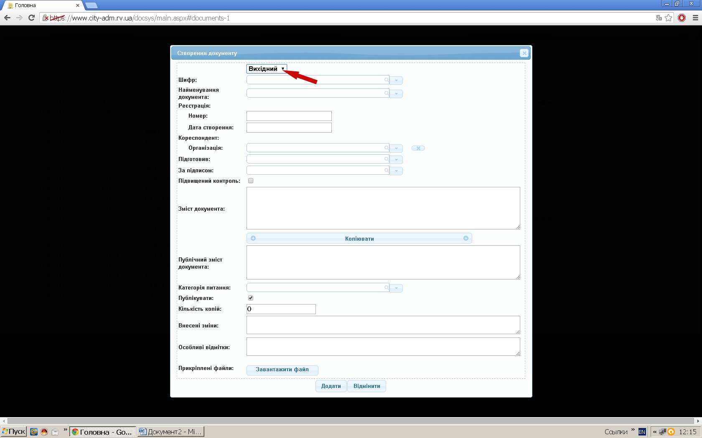
Рис. 3
- Для отримання шифру документа вводимо вид документа на вибір: друкуємо (Рис. 4) або обираємо зі списку (Рис. 5).
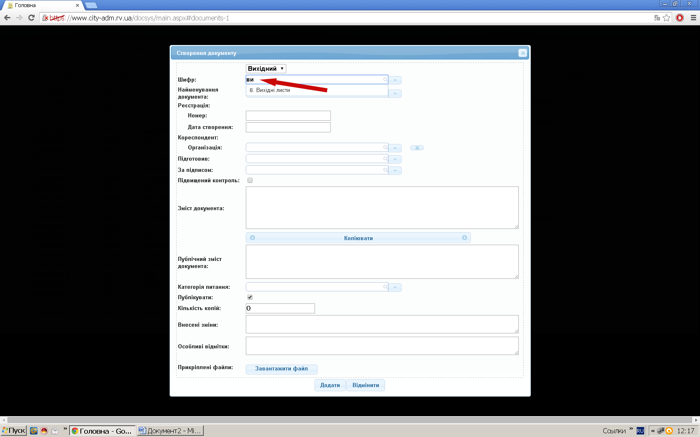
Рис. 4
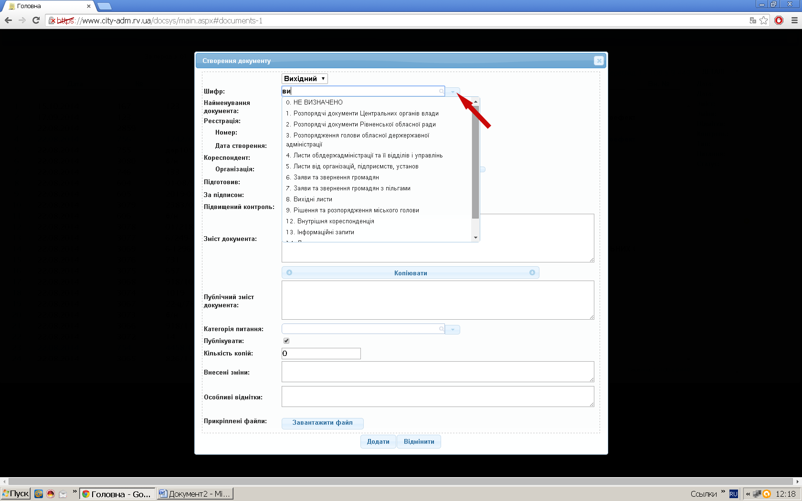
Рис. 5
- Вибір найменування документа (залежно від типу документа) (Рис. 6)
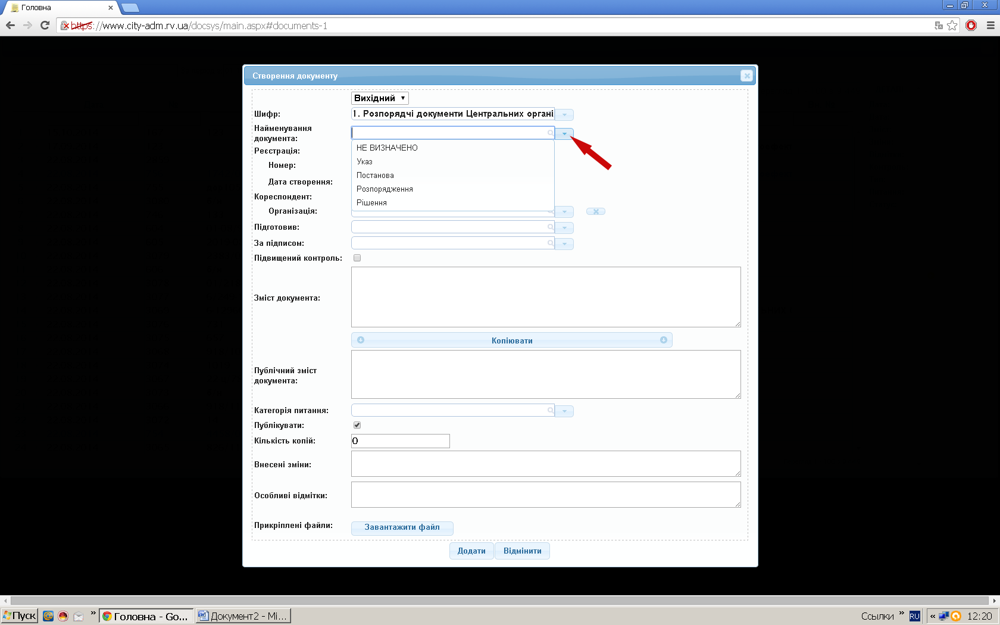
Рис. 6
- Вводимо реєстраційний номер документа відповідно до прийнятої у підрозділі нумерації (Рис. 7)
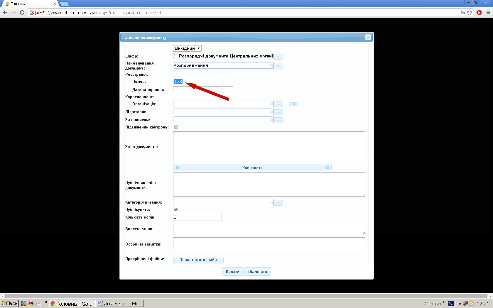
Рис. 7
- У полі (Дата створення) обираємо у календарі дату створення або реєстрації документа (Рис.8)
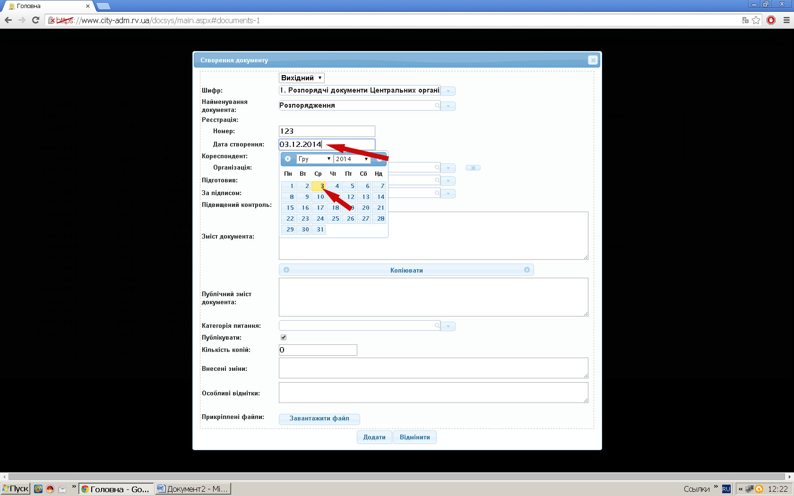
Рис. 8
- Обираємо зі списку (Рис.9) або вносимо у полі «Організація» назву нової організації (кореспондента) (Рис.10)
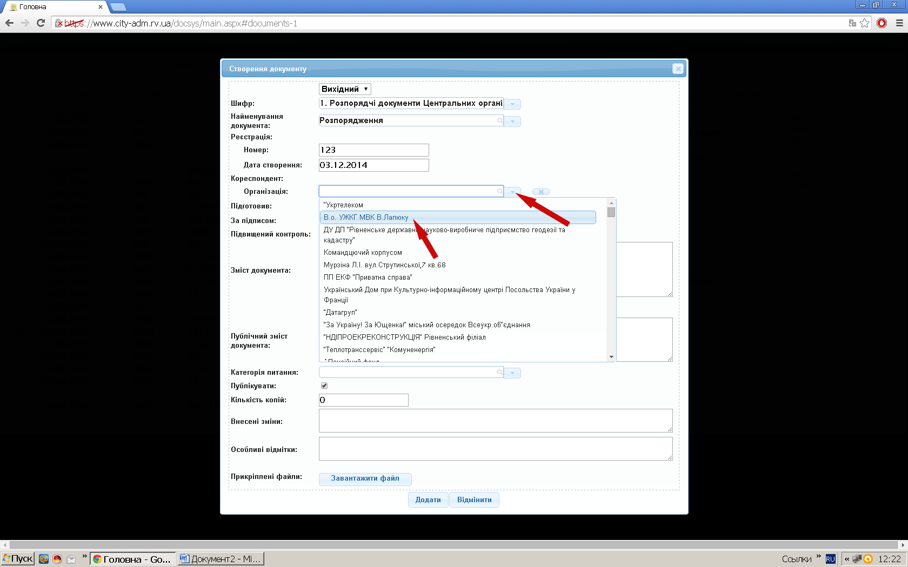
Рис. 9
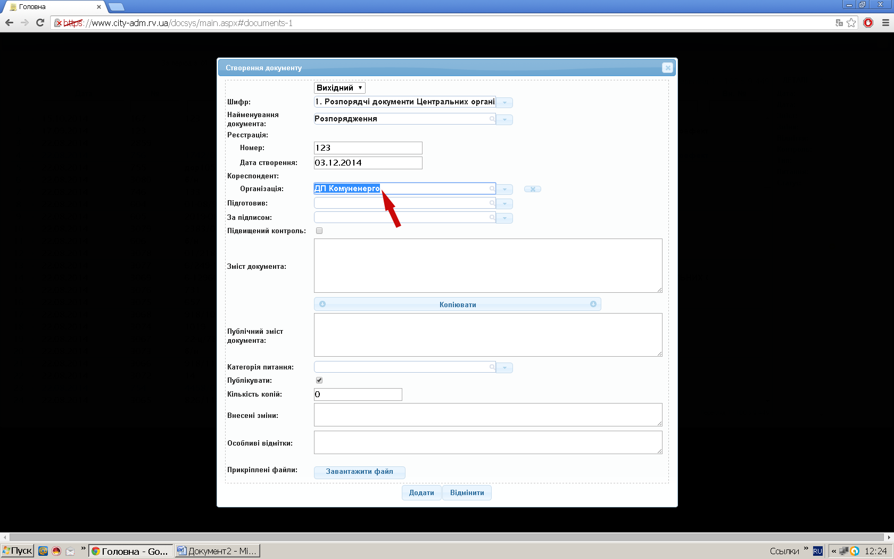
Рис. 10
- У полі «Підготовив» обираємо виконавця (за початковими буквами прізвища, а далі зі списку) (Рис.11)
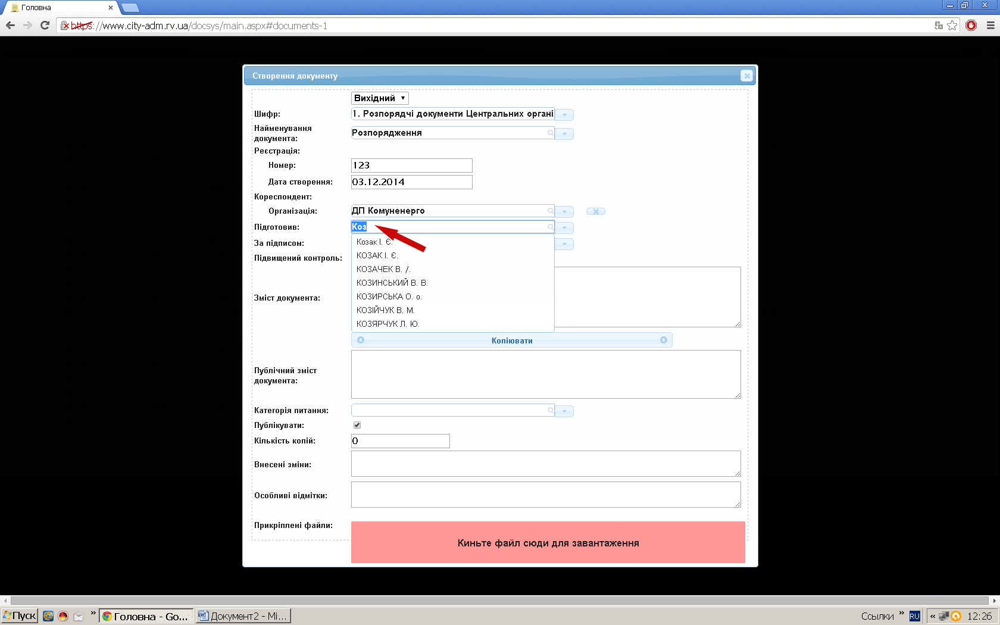
Рис. 11
- У полі «За підписом» вказуємо керівника, за чиїм підписом готується документ (Рис.12)
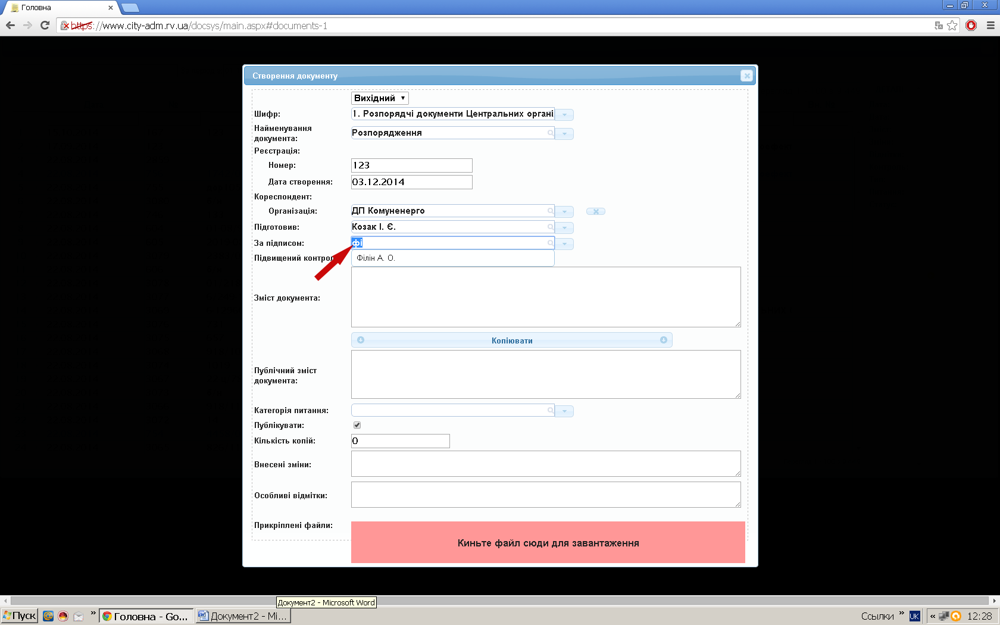
Рис. 12
- Вказуємо короткий зміст документа (для зручності подальшого пошуку, коротка інформація) Рис.13
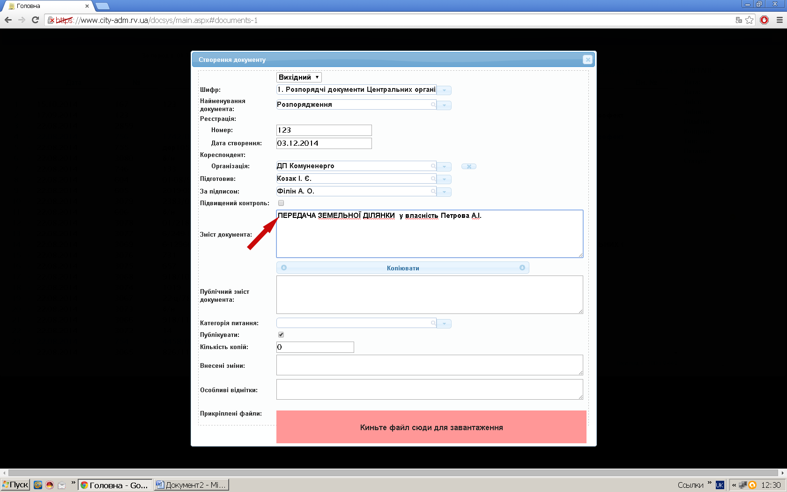
Рис. 13
- Публічний зміст документа: для автоматичного оприлюднення документа (на сайті) створюємо копію змісту тиснемо клавішу «Копіювати» та витираємо персональні данні (Прізвище, телефон...) (Рис.14)
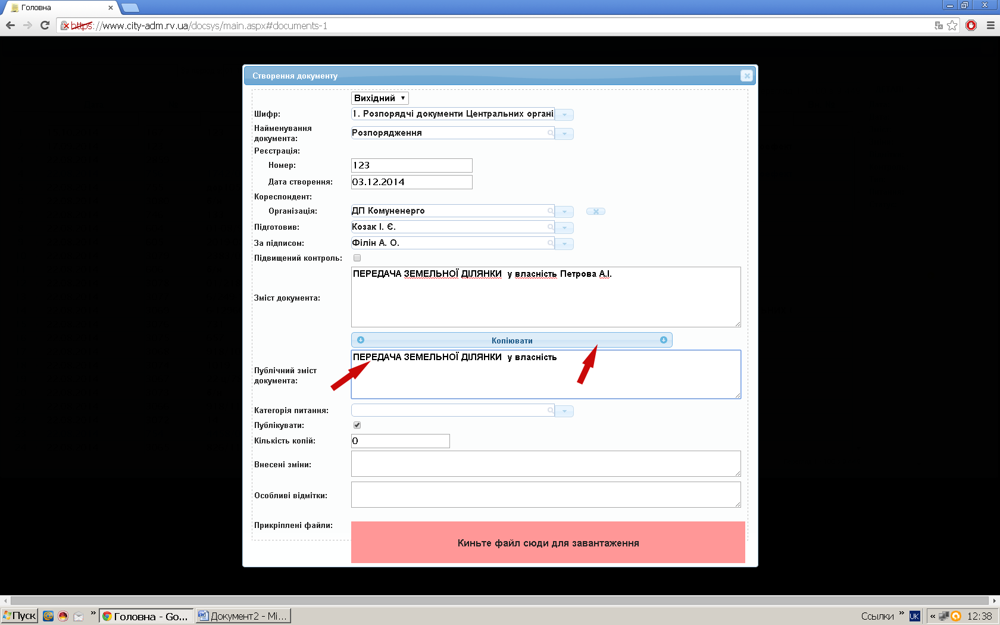
Рис. 14
- Вказуємо категорію питання, висвітленого в документі (обираємо зі списку) (Рис.15)
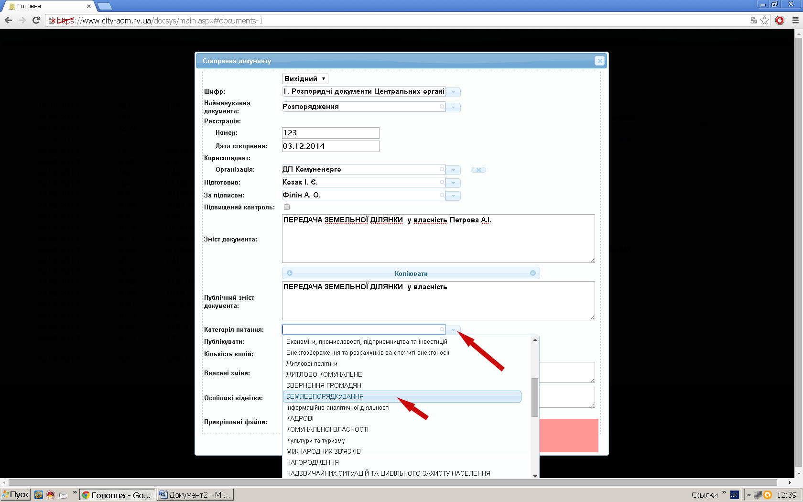
Рис. 15
- Інформація для підготовки до оприлюднення ставимо відмітку «Публікувати» (або без відмітки: для внутрішнього використання) (Рис.16)
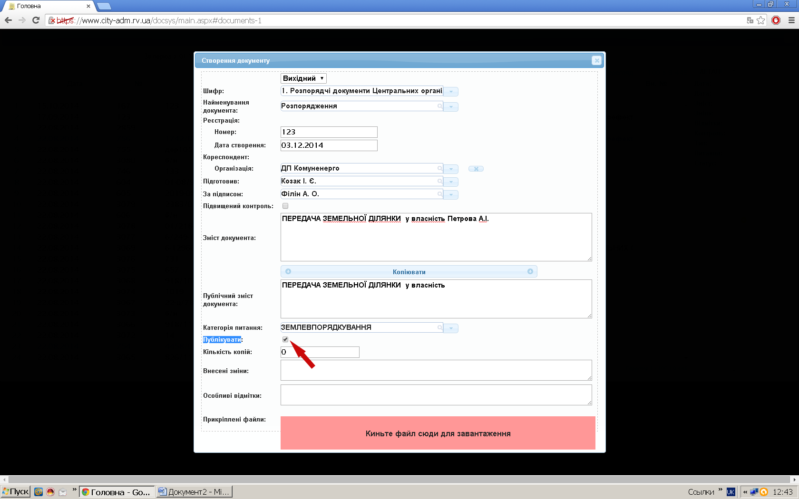
Рис. 16
- «Кількість копій» вказуємо для обліку документів, що були роздруковані по необхідності. Цифру необхідно змінювати з кожним друком копії. (Рис.17)
Рис. 17
- Вказуємо додаткові помітки (інформація по документу, не зазначена в самому документі:
контактні особи) (Рис.18)
У графі «Внесені зміни» робляться відмітки про внесені зміни до документа: якщо це розпорядчий документ (Указ, Постанова, Рішення, розпорядження тощо), то вказуються реквізити документа, якими внесено зміни до цього документа. У випадку листа – робиться аналогічний відповідний запис.
У графі «Особливі відмітки»: у випадку зареєстрованого розпорядчого документа, робиться запис про втрату його чинності (вказуються реквізити документі, яким це встановлено), наприклад: «втратило чинність - рішення обласної ради № 1432 від 16.10.2014». У випадку зареєстрованого листа (при необхідності) робиться запис,
важливий для отримання інформації про цей документ, наприклад: «додатки передані безпосередньо виконавцю», «втратило чинність (актуальність) відповідно до….», контакти, адреса тощо.
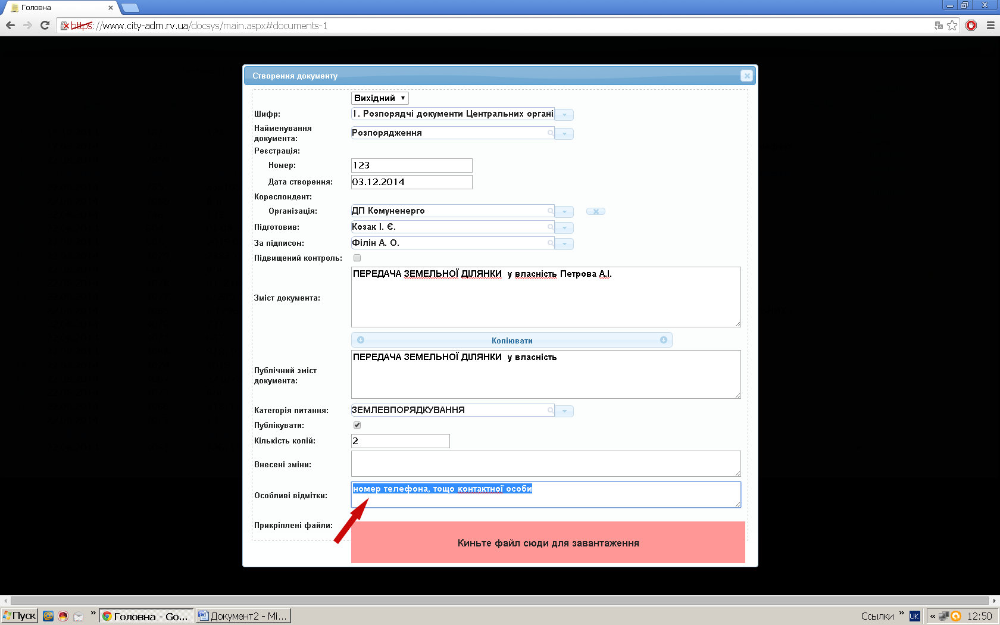
Рис. 18
- Додаємо заздалегідь підготовлені файли (Рис.19) (скановані (якщо потребується наявність підписів, накладених резолюцій, печаток) або любий документ: для заповнення (текстовий, табличний), інформація для ознайомлення). Прикріплення файлів: кнопка завантажити файл. Далі обираємо місцезнаходження документа на вашому комп’ютері (обираєте («робочий стол», або «мои документы», або «мой компьютер». Далі обираємо локальний чи інший (съемный диск, дискета, диск). Далі обираємо папку, де розміщений файл. Далі вказуємо необхідний файл), або файл на комп’ютері (папці), що знаходиться в мережі.
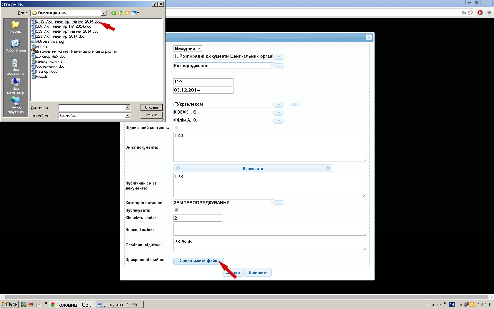
Рис. 19